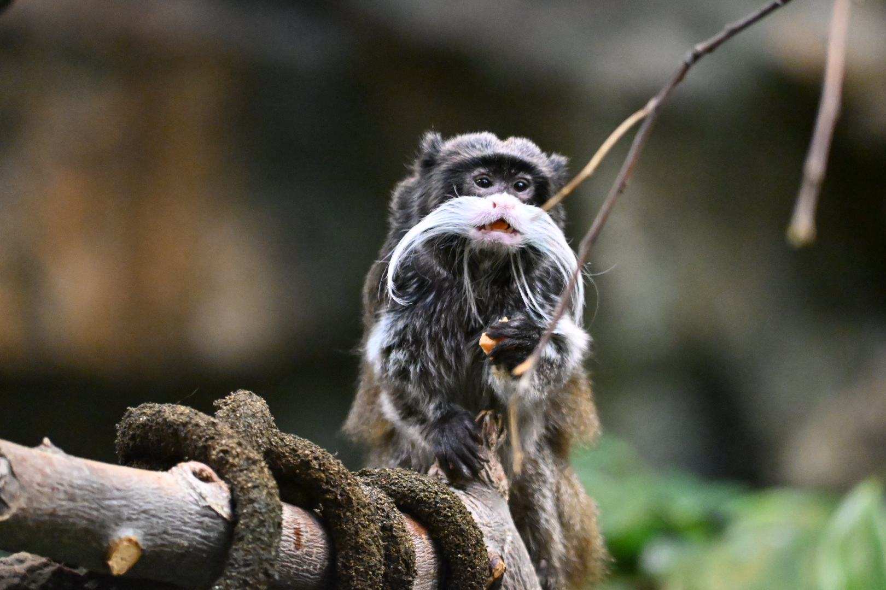

Meet the Emperor Tamarin

Emperor tamarins are small monkeys native to the Amazon rainforests. They are best known for their long, white moustaches, which gives them their distinguished appearence.
These curious primates spend much of their time in trees, searching for fruit, insects, and other food. They live in familial groups and communicate through calls and body movements